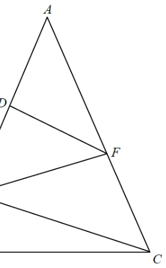

Triangle ABCAD / DE / EBDF ∥ ECRight angleEF (answer)
HKDSE 2019 Paper 2 · Q18
Question. In the figure, $ABC$ is an isosceles triangle with $AB=AC$. $D$ and $E$ are points lying on $AB$ such that $AD=DE=2EB$, while $F$ is a point lying on $AC$ such that $DF \parallel EC$. If $\angle ADF = 90^\circ$ and $CE = 60\ \text{cm}$, then $EF =$
(A) 45 cm (B) 50 cm (C) 55 cm (D) 60 cm

Figure (original exam diagram)
STEP 1 · Set up the parameter
Let $AB = 5a\ \text{cm}$. Since $AB = AC$, we also have $AC = 5a\ \text{cm}$.
The condition $AD = DE = 2EB$ splits $AB$ into $5$ equal parts:
$AD = DE = 2a\ \text{cm},\qquad EB = a\ \text{cm}$
Hence $AE = AD + DE = 2a + 2a = 4a\ \text{cm}$.
Hint: A single unknown $a$ controls all the lengths on $AB$ and $AC$ — this is the key to the whole problem.
STEP 2 · Find the right angle at E
Since $DF \parallel EC$, the corresponding angles give
$\angle AEC = \angle ADF = 90^\circ$
So $\triangle AEC$ is right-angled at $E$.
Hint: $DF \parallel EC$ makes $DF$ perpendicular to $AC$, so $\angle AFC = 90^\circ$ too.
STEP 3 · Pythagoras in △AEC
Apply Pythagoras' theorem to the right-angled triangle $AEC$:
Hint: Once we know the similarity ratio, every length in the small triangle is scaled by the same factor.
STEP 5 · Compute DF
The similarity gives corresponding sides proportional:
$\dfrac{DF}{EC} = \dfrac{AD}{AE}$
$\dfrac{DF}{60} = \dfrac{40}{80} = \dfrac{1}{2}$
$DF = 30\ \text{cm}$
Hint: The similarity ratio is $1:2$, so every side of $\triangle ADF$ is half the corresponding side of $\triangle AEC$.
Corresponding Sides of Similar Triangles\(\dfrac{DF}{EC}=\dfrac{AD}{AE}\)\(\triangle ADF\sim\triangle AEC\) with ratio \(40:80=1:2\), so \(DF=\tfrac{1}{2}(60)=30\text{ cm}\).
STEP 6 · Final answer via △DEF
In $\triangle DEF$, we have $DE = 40\ \text{cm}$, $DF = 30\ \text{cm}$ and $\angle EDF = 90^\circ$.
Hint: Another $3\text{–}4\text{–}5$ triple! $30$, $40$, $50$.
EF = 50 cm
Correct option: (B)
PRACTICESimilar question — try it yourself
Question. In the figure, \(ABC\) is an isosceles triangle with \(AB=AC\). \(D\) and \(E\) are points on \(AB\) such that \(AD=DE=2EB\), and \(F\) is a point on \(AC\) such that \(DF\parallel EC\). If \(\angle ADF=90^{\circ}\) and \(CE=48\text{ cm}\), find \(EF\).
Show the worked solution
Step 1. Let \(EB=a\), so \(AD=DE=2a\) and \(AB=2a+2a+a=5a\). As \(AB=AC\), \(AC=5a\) and \(AE=4a\).
Step 2. Since \(DF\parallel EC\), corresponding angles give \(\angle AEC=\angle ADF=90^{\circ}\), so \(\triangle AEC\) is right-angled at \(E\).
Step 3. Pythagoras in \(\triangle AEC\): \((4a)^{2}+48^{2}=(5a)^{2}\), so \(16a^{2}+2304=25a^{2}\) and \(9a^{2}=2304\), giving \(a=16\). Hence \(AE=64\) and \(AD=32\).
Step 4. \(\triangle ADF\sim\triangle AEC\) (AAA: common angle at \(A\), both right angles, and \(\angle AFD=\angle ACE\)), so \(\dfrac{DF}{EC}=\dfrac{AD}{AE}=\dfrac{32}{64}=\dfrac{1}{2}\).
Step 5. Thus \(DF=\tfrac{1}{2}(48)=24\text{ cm}\). In \(\triangle DEF\), \(\angle EDF=90^{\circ}\), so \(EF=\sqrt{DE^{2}+DF^{2}}=\sqrt{32^{2}+24^{2}}=\sqrt{1600}=40\text{ cm}\).
Answer: \(EF=40\text{ cm}\)
Pythagoras Theorem\(EF^{2}=DE^{2}+DF^{2}\)\(\triangle DEF\) is right-angled at \(D\), so \(EF=\sqrt{40^{2}+30^{2}}=50\text{ cm}\).